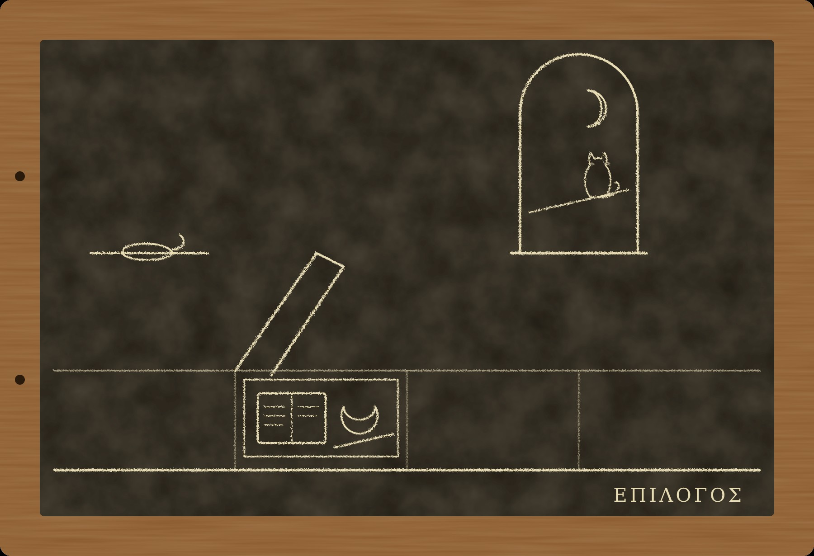

Эпилог. Другая рука

I
Меня зовут Никанор. Я страж слов, как был им мой учитель, Марк Аврелий Мнесарх, и как, может быть, будет кто-нибудь из моих учеников, если у стражей слов ещё останутся ученики. Эти таблички писал он. Теперь пишу я, другой рукой и хуже, потому что меня учили помнить, а не писать, и писать я начал, только когда он сам дал мне в руки свои таблички и велел прочесть их все, от первой до последней.
Он отнёс их к Досифею осенью двести пятьдесят первого года, как и записал. Досифей умер через два года, ему было за девяносто, и сундук собрания сибурезиев перешёл к новому старейшине, который не знал, что в нём лежит, кроме свитков Закона. Я забрал таблички этой весной, в двести шестидесятом, после того как пришла весть с востока. Новый старейшина отдал их мне без спора. Он сказал, что они ему не принадлежат: Досифей велел отдать их тому, кто придёт за ними, если придёт страж, который не переспрашивает. Я не переспросил.
Я прочёл их все за одну зиму, а потом ещё раз. Многое я знал, потому что был при этом. Многого не знал, потому что учитель не говорил мне этого даже тогда, когда уже говорил всё. Я не стану ничего исправлять. Я допишу только то, что случилось после.
II
После Абритта он прожил ещё восемь лет. Он оставался стражем слов, хранил клятвы подрядчиков, наследников и отпущенников, ходил к Дию Фидию через день и повторял со мной хранимое каждый вечер. Он больше ни разу не клялся сам, ни правдой, ни ложью. Когда его спрашивали почему, он отвечал, что своё уже отклялся.
Осенью двести пятьдесят первого года в Рим пришёл мор. Люди умирали за несколько дней, иногда за один, и в худшие месяцы, говорили, в городе умирало по пять тысяч человек в день. Никто не клялся, никто не лгал, а люди умирали, и никто не считал до луны, потому что считать было некогда. Учитель сказал мне тогда, что впервые видит Рим, который боится не луны, а просто смерти, и что Рим от этого не стал ни лучше, ни хуже, только тише.
Мор его не тронул. Он унёс Тертуллу, которая пела гимн при Севере, и её сына-виноторговца. Юния, та девочка из хора тысячелетия, выжила. Фебе к тому времени уже умерла, своей смертью, старухой, в саду на Каринах. Учитель ходил на её похороны и стоял в задней толпе, с рабами.
Ферокс умер весной двести пятьдесят второго года, у двери, на том месте, где лежал всегда. Учитель нашёл его утром. Сколько ему было лет, я не знаю: учитель купил его в двести двадцать шестом, уже взрослым, так что выходит больше двадцати пяти. Молоссы столько не живут. Учитель так и не сказал ему этого, а теперь говорить было уже незачем.
Он похоронил пса за городом, у Аппиевой дороги, недалеко от той общей гробницы, где лежит его жена. Хоронить собак рядом с людьми не принято, и учитель заплатил сторожу, чтобы тот не видел.
После смерти Ферокса он продолжал разговаривать вслух. Я заставал его за этим много раз. Он сидел у стола и говорил, обращаясь к двери, где лежал пёс, или к балке, где спал Пами. Иногда Пами был на балке, иногда нет. Иногда учитель замолкал и слушал, будто ему отвечали. Я ни разу не слышал ответа. Я не знаю, слышал ли он.
Однажды я спросил его прямо. Он долго молчал, потом сказал:
— Они пришли ко мне в тот месяц, когда я ждал смерти и не умер. Я всегда думал, что это цена. Боги оставили мне жизнь и дали в придачу тех, кто будет со мной говорить, раз люди перестали. А может быть, я просто очень хотел, чтобы со мной кто-нибудь говорил. Ферокс бы сказал, что это одно и то же. Пами бы сказал, что это не его дело.
Это всё, что он мне сказал. Я записываю это так, как он сказал, и ничего не прибавляю.
III
В двести пятьдесят третьем году Галла убили его же солдаты. Евмен, который составлял ему присягу, перешёл к Валериану. Валериан стал Августом осенью того же года и посадил рядом с собой сына, Галлиена. Через четыре года, в двести пятьдесят седьмом, Валериан издал первый эдикт против христиан, а через год второй, жестче. Учитель ничего не сказал, когда эдикт прочли на Форуме. Он только посмотрел на меня, и я понял, что он думает о списке.
Летом двести пятьдесят восьмого года в Риме казнили епископа Сикста, прямо в катакомбе, где тот служил. Через месяц в Карфагене обезглавили Киприана, того самого, что писал римским исповедникам из своего укрытия при Деции. Говорили, что тем же летом погиб и Новациан, тот, что приходил к учителю просить за Фурия, а потом не принял обратно никого из тех, кто поклялся. Наверняка этого никто не знает. Учитель сказал, что если это правда, то Новациан умер так, как сам требовал от других, и что таких людей Рим не любит ни живыми, ни мёртвыми.
Фурий пережил и это. Он жил на Целии, при матери, которая так и не узнала, что за неё поклялись, и умерла в своей постели в двести пятьдесят пятом. Фурий носил воду для общины и чинил крыши. Учитель встречал его иногда на улице. Они кивали друг другу и не разговаривали. Учитель сказал мне однажды, что с этим человеком не о чем говорить, потому что всё, что он мог бы сказать, Фурий уже сделал.
Учитель умер в декабре двести пятьдесят девятого года, на Сатурналиях, ночью, во сне. Ему было под семьдесят. Я пришёл утром повторять хранимое и нашёл его за столом. Он сидел, положив голову на руки, рядом с погасшей лампой. Лампа стояла на полке ручкой к окну, на палец от края.
Он не клялся почти десять лет. Он умер не до луны и не после луны, а просто умер, как умирают старики, и никто в Риме не стал считать, сколько ночей прошло с его последней клятвы.
Пами сидел на балке. Он смотрел вниз, на учителя, и не спускался. Когда пришли соседки и либитинарий, он ушёл через окно, по крыше, и больше я его не видел. Я спрашивал о нём в Субуре, на Аргилете, у рыбной лавки у Тусской улицы. Никто не видел египетского кота. Хозяин рыбной лавки, уже другой, сын того, что с больной ногой, сказал, что кошки уходят, когда хозяин умирает, потому что больше им здесь нечего ждать.
Учитель сказал бы, что Пами просто ушёл туда, где дают рыбу и ничего не просят взамен. Я думаю, что он прав.
IV
Весть с востока пришла в Рим в начале осени этого года, двести шестидесятого.
Валериан с войском стоял у Эдессы, в Месопотамии, против персидского царя Шапура. В войске был мор, тот же, что десять лет назад пришёл в Рим. Валериан, говорят, решил договориться и пошёл на переговоры с царём. На переговорах персы его взяли. Одни говорят, что Шапур обманул, другие, что Валериан сдался, третьи, что его схватили в бою. Наверняка никто в Риме этого не знает. Знают только, что римский Август теперь в плену у персидского царя, и что такого не было за всю тысячу лет.
Евмен был при Валериане. Об этом мне рассказал один из писцов канцелярии, которому удалось бежать с границы и который этим летом вернулся в Рим. Он сказал, что формулу переговоров составлял Евмен. Римляне клялись в ней своими богами, персы своими. У персов есть бог Митра, бог договора и клятвы. Персы, сказал писец, очень почитают клятву и считают ложь худшим из грехов. Но кара, которую боятся римляне, до луны и от римских богов, их не касается. Персы клялись своему богу, по своему счёту, и никто из них ничего не считал до римской луны.
Писец сказал, что Евмена взяли вместе с Августом и что его увезли на восток с другими пленными из канцелярии. Больше он ничего не знает.
Я долго думал над этим. Больше тридцати лет Евмен строил свою империю на том, что каждый, солгав, начинает считать ночи. Он сам говорил учителю, что на этом держится всё, что в Риме не воюет друг с другом. А у Эдессы он встретил людей, которые клянутся так же свято и не считают по-римски. Его формула была без щелей. Щель была в самом мире, за краем, где кончается римский счёт.
Учитель, если бы дожил, сказал бы, наверное, что Евмен впервые узнал наверняка хотя бы одно: что бывает с теми, кто не верит в наших богов. Им ничего. Это он знал и раньше, по своим сорока шести. Но одно дело записать это на воске, другое увидеть, как на этом знании тебя самого увозят на восток.
Я не знаю, жив ли он. Если жив, ему за шестьдесят. Говорят, персидский царь держит римских пленных в своём городе на юге и заставляет их строить ему плотины и мосты. Может быть, Евмен составляет там формулы для персидских подрядчиков. Может быть, сидит у стены и повторяет про себя чужие клятвы, которые ему уже некому прочесть. Я хотел бы спросить его, что он думает теперь. Он ответил бы правду. Он всегда отвечал правду, когда его спрашивали.
V
Под половицей в комнате учителя, когда я поднял доску, лежали четыре вещи. Табличка «Чужие кары». Серебряная лунула с процарапанными буквами VETV. Табличка Тимона, в простой деревянной рамке, связанная шнурком. И костяной стиль писца Юста, который учитель получил от Досифея двадцать лет назад и, как оказалось, так и не выбросил.
Я взял табличку «Чужие кары» и прочёл её, обе стороны.
На лицевой стороне семнадцать дел. Четырнадцать из них оказались убийствами, которые Рим принял за кары. Мальчик-Август и жена учителя под это не подходят. Последнее, семнадцатое, записано так: «Деций Август и его войско. Погибли от клятвы, в которой не было ни слова лжи».
Я дописал под ним восемнадцатое. Я долго думал, имею ли право писать на лицевой стороне, которую учитель хранил двадцать один год. Потом решил, что если не допишу я, не допишет никто.
«Валериан Август и Евмен, страж слов. Взяты у Эдессы на переговорах, где каждая сторона клялась своим богом. Не кара и не убийство. Римский счёт кончился».
На обороте девять строк. Каждая про учителя. Никанор, которого он заставил поверить. Сосикл, который солгал и жив. Диодор, которого убил счёт или боги. Валент, которому он велел не считать. Тертулла, за которую он промолчал. Фурий, который не клялся. Он сам, поклявшийся за Анфусу. Его жена, которую он не услышал. И последняя: «Я. Видел. Не смог убедить. Записал».
Ниже, мелко, его рукой: «Пусть так».
Я долго смотрел на оборот. Пами говорил ему, что на обороте больше, чем на лицевой, и что на лицевой чужие, а на обороте его. Учитель вёл оборот двенадцать лет. Он записал в него всё, что сделал сам и чего сам не смог.
Я дописал десятую строку. Не о нём, о себе, потому что оборот для своих.
«Никанор, страж слов. Прочёл всё. Не знаю, карают ли боги. Храню за двоих».
VI
Я не знаю, карают ли боги.
Учитель не знал. Евмен не знал. Мелитта, может быть, знала, но она умерла, и никто не может сказать, от чего: от лихорадки, от богов или от того, что считала ночи пальцами по нитке. Учитель солгал у жертвенника, зная, что лжёт, и дожил. Сосикл солгал и дожил. Сорок шесть вчерашних христиан солгали и дожили. Тимон солгал семь раз и умер стариком. Ни одна смерть за двадцать лет, которую Рим считал карой, не оказалась карой наверняка, и ни одна жизнь, которую Рим считал чудом, не оказалась чудом наверняка. Чаши стоят ровно. Учитель так и написал, и я не могу написать иначе.
Он решил не рассказывать Риму. Я тоже не стану. Не потому, что боюсь, и не потому, что Рим не поверит. Потому что мне нечего рассказать, кроме того, что я не знаю. А это Рим и так знает про себя, только не говорит вслух.
Таблички я отнесу обратно, в сундук собрания сибурезиев, к свиткам Закона, и попрошу нового старейшину отдать их тому, кто придёт за ними, если придёт кто-нибудь, кто не переспрашивает. Пусть лежат. Сто лет, двести, тысячу. В Риме говорят: «Записал — значит, не посмел поклясться». Учитель всю жизнь стыдился этой поговорки, а в конце ответил ей двумя словами.
Я отвечу так же.
Пусть так.